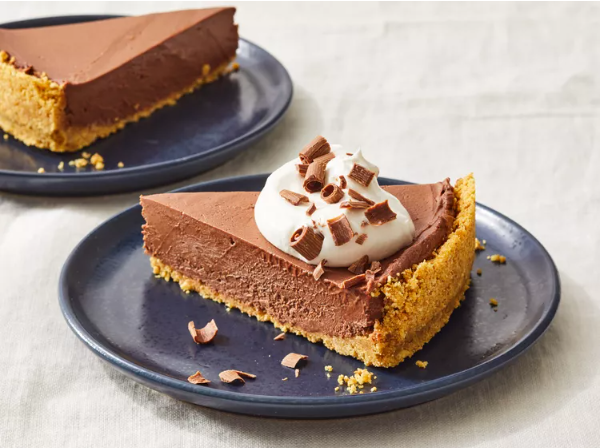

No-Bake Chocolate Cheesecake Recipe

Description
This no-bake chocolate cheesecake is deliciously rich but easy to make! It's lovely topped with some sweetened whipped cream, fresh berries, or a raspberry coulis. This recipe was passed down to me from my mom.
- Prep Time: 30 mins
- Additional Time: 1 hr 30 mins
- Total Time: 2 hrs
- Servings: 8
- Yield: 1 (8-inch) cheesecake
Ingredients
- 1 cup graham cracker crumbs
- 1/4 cup salted butter, melted
- 1/2 cup white sugar, divided
- 5 ounces dark chocolate, chopped
- 2 tablespoons unsweetened cocoa powder, sifted
- 2 or 3 tablespoons hot water, or as needed
- 1 (8-ounce) package cream cheese, softened
- 1/2 cup heavy cream
Directions
- Gather your ingredients.
- Mix graham cracker crumbs with melted butter and 1 tablespoon of sugar; press crumb mixture into bottom and 1/2-inch up the sides of an 8-inch springform pan. Refrigerate crust while you make the filling.
- Melt chocolate in a microwave-safe glass or ceramic bowl in the microwave on high power for 1 to 2 minutes, or until melted, stirring every 15 seconds; set aside to cool.
- Whisk cocoa powder and enough warm water together in a medium bowl to form a smooth paste.
- Beat cream cheese and remaining sugar into cocoa mixture until combined; set aside.
- Beat cream in a chilled glass or metal bowl with an electric mixer until soft peaks form. Fold in cooled melted chocolate.
- Fold chocolate cream mixture into cream cheese mixture until thoroughly combined; spread on top of graham cracker crust.
- Freeze cheesecake for 1 hour. Thaw in the refrigerator for 30 minutes before serving.
Tips
Taste a little of the filling to ensure that the right amount of chocolaty goodness has been reached. You can add a little more of the cocoa powder and water mixture to taste.
Instead of freezing, the cheesecake can also be covered and chilled at least 2 hours before serving.
Cheesecake may be stored in an airtight container and chilled up to 5 days.
Nutrition Facts (per serving)
- Calories: 405
- Fat: 30g
- Carbs: 32g
- Protein: 5g
Return to main page